|
|
The MIDP Reference Implementation runs MIDlets in a device emulator, which shows how the MIDlets will look and feel on a device. This chapter shows you how to start the device emulator’s graphical user interface (GUI), and how to interact with it to run and manage MIDlets. The chapter contains the sections:
The device emulator is a cellular phone. The emulator’s GUI displays a skin, which is a graphic that looks like a device. The skin has a screen and keypad. The following figure shows the skin:
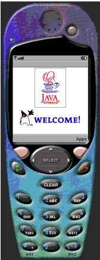
You press the buttons on the device by clicking them with the left mouse button (left-clicking) or by using their keyboard shortcuts. The buttons and keyboard shortcuts are described below.
The skin has up, down, left, and right navigation buttons, and a select button in the center of the navigation buttons as shown in FIGURE 2. You can use the arrow keys on the keyboard of your desktop system instead of the navigation buttons, and the Enter key for the Select button.
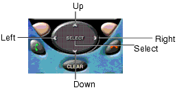
The skin also has a Start Call button (the button on the left printed with a green handset), an End Call button (the button on the right printed with a red handset), a Clear button, and two soft buttons to either side of the up navigation button. FIGURE 3 shows these buttons. You can use the F1 and F2 keys on the keyboard of your desktop system instead of the left and right soft buttons. You can use the F10 key instead of the End Call button. When you are entering text, you can use the backspace key instead of the Clear button.
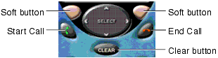
The skin has a standard phone keypad: the numbers 0-9, along with the pound (#) and star (*) function keys. The mode-shift and space functions are mapped to the * and # keys, respectively, on the keypad. You can use the letter, number, #, *, shift, and space keys on your keyboard instead.
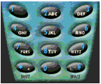
Finally, the skin has a power button above the screen, as shown in the following figure, which exits the emulator. Closing the emulator window also exits it.
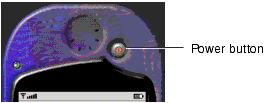
For example, if your installation is in the c:\midp2.0fcs directory, you could execute the following command:
midp command with no arguments.See Appendix C, "The midp Command” for more information in a manpage format. For example, you could use the following command:
The device skin will appear displaying the Java Powered logo™ welcome screen.
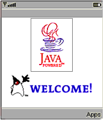
This section describes both how to install a MIDlet suite, and the additional steps that occur if the MIDlet suite uses push functionality. This section has the topics:
To download and install a MIDlet suite:
An Applications screen similar to the one in the following figure will appear:
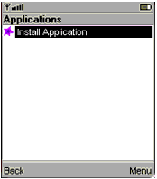
A system menu similar to the one in the following figure will appear:
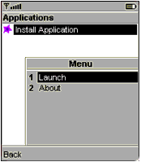
A MIDlet Locator screen similar to the following figure will appear:
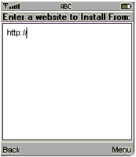
After you enter a URL the MIDlet Locator screen will be similar to the one in the following figure:
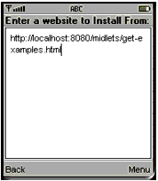
A system menu similar to the one in the following figure will appear:
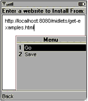
A list of the MIDlet suites available on the HTML page will appear. The screen showing the list of MIDlets will be similar to the one in the following figure:
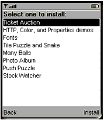
A confirmation screen will appear, similar to the one shown in the following figure:
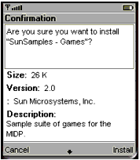
Cancel by pressing the button under the Cancel label on the device skin.
If you chose Install, MIDP will try to download and install the MIDlet suite. A series of screens will inform you of the progress of the installation, including informing you if there is a problem with the suite that prevents it from being installed.
If the installation is successful you will be returned to the Application screen and the newly installed MIDlet suite will be highlighted. If the installation fails, you will be given an error message and returned to the MIDlets list in the Install application. The following figure shows the result of a successful installation:
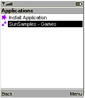
Push functionality enables MIDP to launch a MIDlet so that it can receive an incoming message. When the emulator assigns a MIDlet suite that uses the push functionality to a domain that gives push a user permission, you must grant that permission before the emulator can install the MIDlet suite. (See Chapter 3, "Using MIDP Security Features” for more information on domains and permissions.) If you deny a permission request, a screen similar to the one in the following figure appears:
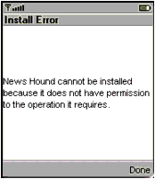
If you give permission and then change your mind, you can modify your selection. See "Changing a MIDlet Suite’s Permission Levels" for instructions.
The requests for permission occur after you confirm that you want to install the MIDlet (Step 9, above). You must answer the questions before the installation can be completed. The requests are for:
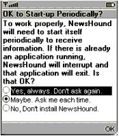
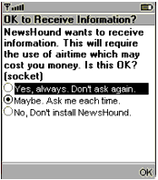
You cannot have multiple MIDlets on the device emulator use the same port. If, after you give any permissions required, the device discovers that the MIDlet suite uses the same port as an installed MIDlet suite, the installation will fail. The screen that informs you of the failure will look similar to the one in the following figure:
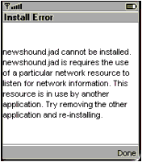
This section assumes that you have installed one or more MIDlets suites on the device emulator. There are instructions in the previous section, "Downloading and Installing a MIDlet Suite" and in "Installing a MIDlet Suite" . It contains the topics:
This section is titled “Launching a MIDlet or MIDlet Suite” because the MIDP Reference Implementation presents both. That is, MIDlet suites can contain one or more MIDlets. In the MIDP Reference Implementation, if a MIDlet suite has only one MIDlet, the device emulator presents that MIDlet and you can choose to run it. If a MIDlet suite has multiple MIDlets, the device emulator presents the MIDlet suite and if you choose to run it, you must then choose which MIDlet to run.
To run a MIDlet or MIDlet suite installed on the device emulator:
The MIDlet or MIDlet suite then starts. The following figure shows the TicketLand MIDlet starting:
When a MIDlet tries to use protected functionality for which it requires user permission, you will be asked to grant permission. A permission screen will appear that looks similar to the one shown in the following figure:
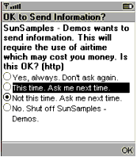
Note that the protocol for which the permission is required is shown in square brackets after the question. This is for development purposes, not for end users.
In addition to the question in FIGURE 19, the MIDP Reference Implementation also asks, when necessary, for permission to interrupt, to receive information, and to make a network connection. Although the question will vary depending on which protected functionality the MIDlet is trying to use, the possible answers stay the same. The possible answers are:
Any time this MIDlet wants to use the network it may, without interrupting to ask permission. Selecting this option means that not only can the MIDlet use the network until you exit the MIDlet, but that it can use the network every other time you run the MIDlet too (or for push, every other time it needs to interrupt).
The MIDlet may perform this one protected action. The next time the MIDlet tries to perform the action, the screen will appear again.
The MIDlet may not perform this protected action, but you might allow the MIDlet to do so next time. The next time the MIDlet tries to perform the action, the screen will appear again.
This MIDlet may not perform the protected action. The MIDlet will still appear in the Applications screen, but if you run it, it will not be permitted to use that protected functionality. For example, if the NewsHound MIDlet is shut off, you cannot access any articles or get new ones.
If you change your mind about the permission you have granted, you can update your choice. See "Changing a MIDlet Suite’s Permission Levels" for instructions.
This section assumes that you have installed one or more MIDlet suites on the device emulator. There are instructions in the previous section, "Downloading and Installing a MIDlet Suite" and in "Installing a MIDlet Suite" .
To get information about a MIDlet suite installed on the device emulator:
A system menu will appear that looks like the one in the following figure:
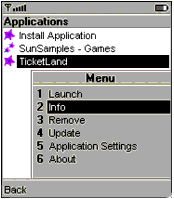
A screen appears that is similar to the one in the following figure:
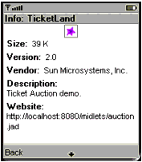
The arrow at the bottom of the screen indicates that you can see more information by scrolling. Scroll by pressing the down navigation button. (FIGURE 2 shows the navigation buttons.)
This section assumes that you have installed one or more MIDlet suites on the device emulator. There are instructions in the previous section, "Downloading and Installing a MIDlet Suite" and in "Installing a MIDlet Suite" .
When you remove a MIDlet suite from a device, you remove not only the suite but also any data that its MIDlets stored on the device. You must always remove a MIDlet suite; you cannot remove a MIDlet from a MIDlet suite.
To remove a MIDlet suite installed on the device emulator:
A system menu like the one in the following figure will appear:
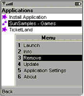
A confirmation screen appears that is similar to the one in the following figure:
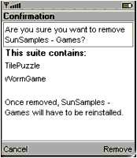
Cancel by pressing the button under the Cancel label on the device skin.
An Applications screen will appear. If you chose Confirm, the MIDlet you removed will have been removed from the list of available applications.
This section assumes that you have installed one or more MIDlet suites on the device emulator. There are instructions in the previous section, "Downloading and Installing a MIDlet Suite" and in "Installing a MIDlet Suite" .
When you update a MIDlet suite, you replace the resources (the MIDlets, graphics, and so on) but you do not affect any data that its MIDlets stored on the device. You must always update a MIDlet suite; you cannot update a MIDlet from a MIDlet suite.
To update a MIDlet suite installed on the device emulator:
A system menu like the one in the following figure will appear:
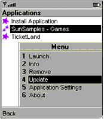
The system then begins to update the MIDlet suite. It uses the same URL from which you originally downloaded and installed the MIDlet suite. A confirmation screen appears, similar to the one in the following figure:
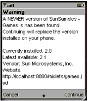
The message that you receive depends on whether the version found is newer, older, or the same as your current version.
Cancel by pressing the button under the Cancel label on the device skin.
If you chose Continue, the version of the MIDlet suite found at the URL will replace the version of the MIDlet suite currently installed, and you will be returned to the Applications screen.
This section assumes that you have installed one or more MIDlet suites on the device emulator. There are instructions in the previous section, "Downloading and Installing a MIDlet Suite" and in "Installing a MIDlet Suite" .
You can change the permission levels that you have granted a MIDlet suite. For example, if you have turned off a permission, you can turn it back on at any level. For example, you could have the MIDlet suite’s MIDlets ask permission each time one of them wants to use the protected functionality. See "Handling Permission Requests" for a list of the protected functionalities for which you might be asked to set a permission, and the available permission levels.
To change a MIDlet suite’s permissions:
A system menu like the one in the following figure will appear:
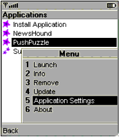
A screen will appear that is similar to the one in the following figure. The figure has many parts; each part shows part of the screen, so that you can see all of the questions.
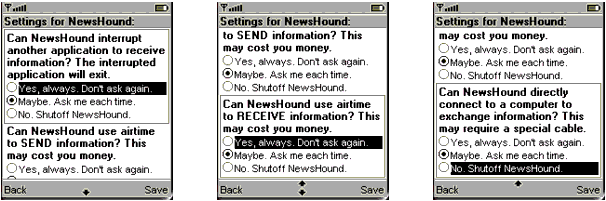
The Application Settings screen will include all the permissions that you are permitted to set for the suite. The permission levels are similar to the answers given for the permission requests in "Handling Permission Requests" .
Cancel by pressing the button under the Back label on the device skin.
In both cases, you will be returned to the Applications screen. If you choose Save, your return will be preceded by a confirmation screen similar to the one in the following figure:
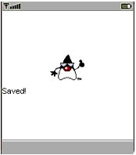
The MIDP Reference Implementation includes an About Box for MIDP. The information includes the release number and date.
To see the about box:
A system menu like the one in the following figure will appear:
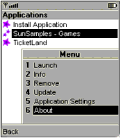
The About choice is available from the system menu associated with any MIDlet or MIDlet suite on the Applications screen, including the Install Application MIDlet.
A screen similar to the one in the following figure appears:
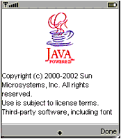
|
|
Using MIDP MIDP Reference Implementation, Version 2.0 FCS |
Copyright © 2002 Sun Microsystems, Inc. All rights reserved.